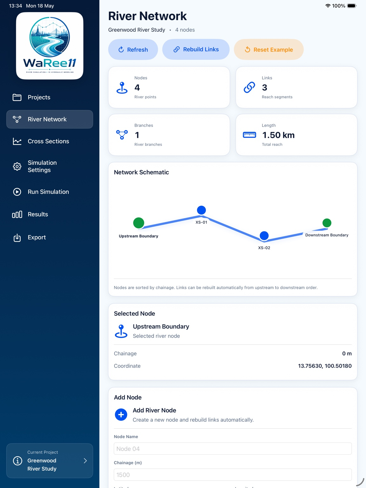
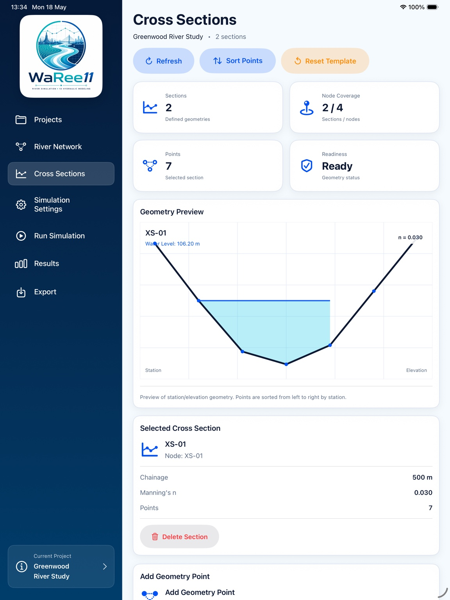
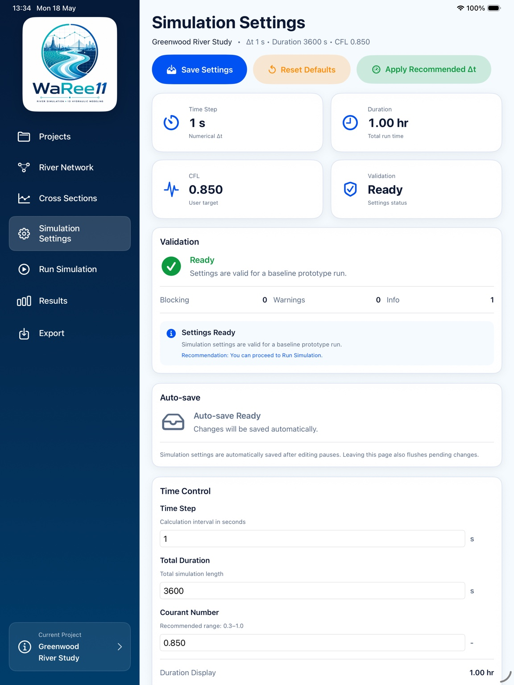

River Network Editor
Design multi-branch river systems, nodes, links, and schematic river networks.
Engineered for iPadOS
Powerful 1D river network modeling, right on your tablet. From geometry to results, WaRee11 brings a clean hydraulic modeling workflow to iPadOS.

Core workflow
Design multi-branch river systems, nodes, links, and schematic river networks.
Define geometry, stations, elevations, water levels, and Manning’s roughness.
Configure time step, duration, CFL, validation, and stability conditions.
Analyze water level profiles, time series, peak flow, and hydraulic outputs.
App screens





Technical foundation
Modern declarative UI structure with reactive data binding.
Robust and testable data access layer for project workflows.
Numerical method direction for future river hydraulics development.
Designed toward 1D unsteady open-channel flow simulation.
Designed for tablet-based engineering, education, and field workflows.
Modern river simulation for engineers, researchers, universities, and students.
Contact Developer